86. Rereading Asimov
November 19, 2021
In which I close-read Asimov's Empire and Robot novels across multiple rereads — appreciating his cut-to-insight world-building over aesthetic luxuriance, his unconscious seed-planting across decades, and arguing that Asimoverse is a greater achievement in extended-universe construction than Middle Earth.
Rereading Pebble in the Sky. Not a great book but it has a certain uniquely poignant feel to it, by virtue of being approximately the middle book of Asimoverse. The robot past and Foundation future are equally distant in time, and the story has a certain expansive solitude to it.
On to reread of Currents of Space
Hehe Asimov foresaw a space future with sporks and food in jellied briquet form factors like those horrifying 1950s jell-o recipes for “salads”
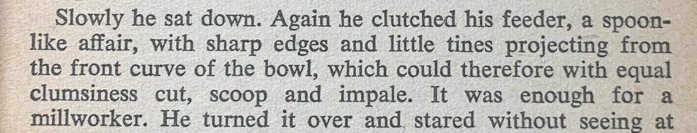
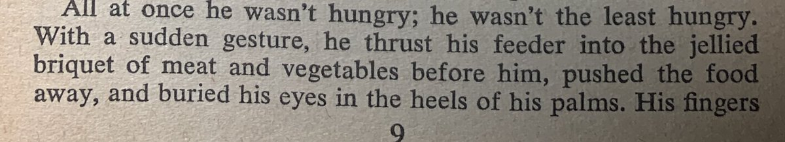
Finished Pebble. Last week I reread Asimov’s The Stars, Like Dust. It’s basically a cheesy romance in a “Golden Horde… in space” milieu. I think it was one of the first Asimovs I read as a kid, and then casually reread a few years back. This second reread is first close read.
It’s early work (1951) and pretty weak, but the portrayal of the clearly Mongol-Turkic Tyranni as the antagonists is surprisingly deft and sympathetic for 1951, and arguably far more sophisticated than say Dothraki/Khal Drogo in GoT a half-century later, or even Dune.
The literary quality is crap, but the universal-humanist world-building is solid. While the Tyranni are antagonists, it’s not in a good-vs-evil sense but as sports rivals. They are “different” primarily in terms of tech and military tactics, and governance model, not morality.
The book is basically a meditation on forms of governance — autocracy, manorialism, pastoralism, nomadic-logistics state (aka Mongol/Genghis-Khan model, which was basically a logistics/supply chain empire).
Despite being barely longer than a novella, it packs more variety than Dune, and quickly gets to the essence of each in short expositions. By contrast, I felt things like Dune and GoT take 100x more room to exoticize without getting to the essence of things.
Like, the Wikipedia page on hydraulic empires teaches you more about the subject of Dune than Dune. I think I resonate with Asimov because he devalues luxuriant aestheticization in favor of cut-to-insight, and without messianic editorializing. Hydraulic empire - Wikipedia
The weakest part of Stars, Like Dust, is the silly subplot where a mystery McGuffin document of great power that drives the B-plot turns out to be the long forgotten US constitution. This was editor H. L. Gold’s idea and Asimov didn’t really like it.
This feels like a book-length commentary on the Go-like subtleties of governance, concluded with a triumphant claim that the governance model that will level up the fame is: the guaranteed no-loss strategy for tic-tac-toe! Like product placement for Tea Party types.
Speaking of sporting references, as an aside one of Asimov’s pet peeves was use of sport allegories without understanding. In Pebble in the Sky, he integrated a full championship-grade chess game into the plot (and the plot is chess-like too).
I recall his commentary from an earlier edition I read long ago, something like “I hate when people use imagery like ‘he opened a slashing attack with his rook’… did the rook use a knife or a gun?’”
This criticism applies strongly to supposedly superior literary-aesthetic scifi
This criticism applies strongly to supposedly superior literary-aesthetic scifi
Asimov’s plots have genuine elements of sporting strategy, even if simple. It isn’t just cosplay-larp bullshit portrayed in vaguely impressionistic ways. Ditto his politics.
I think a lot of Asimov can be rewritten much more powerfully by removing the editorial+magazine constraints he was working under, taking his extensive commentary on his own learnings/intentions as a guide. He’s surprisingly not as much of a product of his time as it seems.
In fact, he’s a lot more modern than many contemporary authors who might superficially seem more modern by having more diversity/gender-balance out of the box etc. That stuff is trivial to update. But lack of good bones can’t be fixed. The best Asimov stories have great bones.
Now halfway through Currents of Space. It’s much better than I remember. Kyrt was the OG spice. Florina is a better Arrakis. The oligarchy of Sark is more interesting than Attreides-Harkonnen intrigues. I only wish it had been 3x as long.
The 3 Empire novels are like a sports training montage. They gesture at vastly more material than is in either robots or foundation. I want more of this filler. I’ll take 10 more empire novels.
I think all the Asimoverse novels by other authors authorized by Asimov’s estate have focused on fkeshingboutbor bridging gaps in the grand arc. I haven’t read any but none seem to fill in more Empire stuff.
Currents of Space is also a transparent retelling of the antebellum South story. Kyrt = cotton. There’s interesting language alluding to King Cotton and also foreshadowing “the spice must flow”
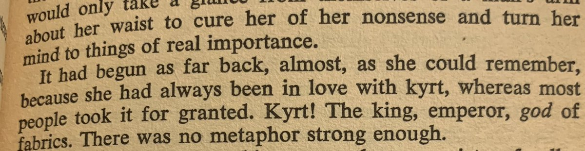
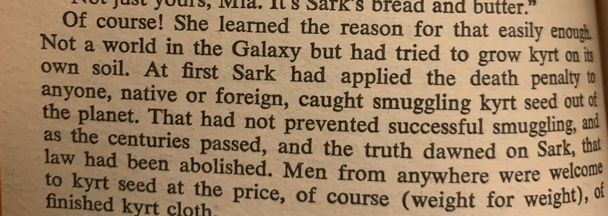
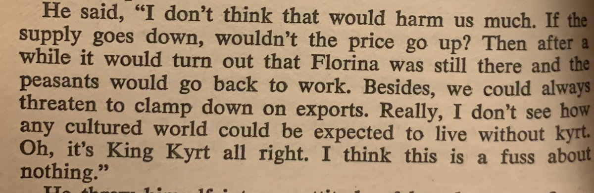
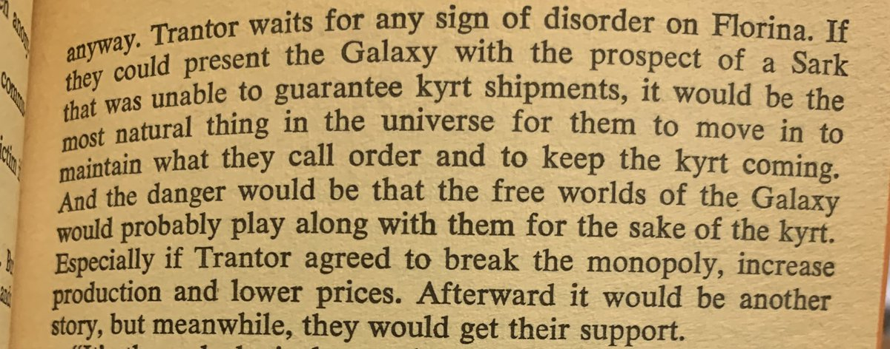
There’s also some gesturing towards silk as a closely guarded Chinese secret, with the counterfactual twist that if Chinese had discovered silk couldn’t be made outside China fit mysterious reasons, they’d have stopped protecting it.
By contrast, Dune’s spice is a mushroom allegory I think, with some vague gesturing at oil. Much less precise. Asimov is not given enough credit for drawing from all sorts of sources. The main Foundation arc is fall of Rome but he clearly drew from many other sources.
Asimov’s MacGuffins also tend to have serious detail. Kyrt is not just a random commodity. It’s nature shapes the tale. The resolution of the plot has parallels to things like nylon disrupting silk. He drew on his chemistry training to make good MacGuffins. See also thiotomoline.
Dune’s “spice” isn’t bad. It is required for hyperspace navigation and is responsible for various mystical powers in the heroes, but I prefer Asimov’s weirdly nerdy fake science detailing.
The main awkward thing about Currents is a race inversion (the Florinians — equivalents of black slaves on cotton plantations— are white and Sarkite plantation oligarchs are dark skinned and there’s a half-assed attempt to frame the story as explicitly not having a race motive.
It doesn’t work, but he tried! In 1952! And managed a story that would probably upset both sides of culture war today while drawing on US slavery history in a critical and sophisticated way where more recent stuff like Firefly goes for the easy uncritical antebellum romanticism.
He wrote these 3 novels in a 2 year burst of inspiration. Remarkable. And found his own humanist political voice that’s clearly distinct from John W. Campbell’s or Heinlein’s.
Flawed human by today’s standards but he clearly tried to write boldly progressively for 1950-52.
Flawed human by today’s standards but he clearly tried to write boldly progressively for 1950-52.
This is why, despite his technical inadequacies, he’s a seminal writer. Made the bold genre reinventing leaps called for by the times.
Now into The Robots of Dawn.
Struck by weird predictive misfires in Asimov. The main futuristic storage medium is still film. They have “book film viewers.” They have phone booths even as late as The Stars, Like Dust.
What made wireless+digital tech so hard to see in 1950?
Struck by weird predictive misfires in Asimov. The main futuristic storage medium is still film. They have “book film viewers.” They have phone booths even as late as The Stars, Like Dust.
What made wireless+digital tech so hard to see in 1950?
In Naked Sun, cryofreezing of eggs and sperm is not anticipated but ex-utero fetal development exists, so the premises of the society are weirdly screwed up.
Somehow the internet was a major blindside for people. It is implied that the robots have radio communication on Solaria and there’s a sort of VR telepresence but nothing like a proper internet. Computers are accessed like libraries.
Vannevar Bush envisioned the Memex (on microfilm) back in 1945 but it was still too hard to imagine how computers, digitization, and radio would converge. The comms imagined all sounds like analog radio. Including “sub-ether” futuristic hyper spatial comms.
First proper minicomputer in 1961, first internet link in 1969, but first true science fiction envisioning the internet only in 1984, with neuromancer, 15 years after it was created in rudimentary form. Why the huge lag? What caused the blinders?
Finished. This reread was interesting. Written in 1983 this was 25 years after Naked Sun in 1957. The last 2 robot books and the last 4 foundation books were all written in the 80s and 90s. So Asimoverse was written in the 59s and 80s. What was he doing in the 60s and 70s? 🤔
If you look at the chronological bibliography it looks like Asimov doesn’t the 60s and 70s mostly writing pop nonfiction. I’ve read a bunch but damn didn’t realize he’s written so much and f that. Isaac Asimov bibliography (chronological) - Wikipedia
* so much of that
The Gods Themselves is the only new novel in the 2 decades 🤔
His short stories too show a slow down. Isaac Asimov short stories bibliography - Wikipedia
The Gods Themselves is the only new novel in the 2 decades 🤔
His short stories too show a slow down. Isaac Asimov short stories bibliography - Wikipedia
So basically a furiously productive phase from 1939 to 1957 (ages 19 to 37), then a really long 25y sabbatical into nonfiction till ~1982 (ages 37 to 62), then a mature late life burst age 62-72 wrapping up his peak work neatly in a bundle with 6 keystone novels.
This is fascinating and encouraging. That you can come back to 25 year old material and really level it up.
Robots of Dawn is not great. Lots of kinda unnecessary sex-fetish stuff. Too much exposition. And looking now from a technique perspective, R. Giskard is a bit of a deus ex machina. He ties up every loose end in Asimoverse and is way too powerful. More so than Daneel.
Still, it’s elegantly done and Giskard is a well-crafted character. Despite being basically the closest thing to a god in Asimoverse, he’s kinda interesting.
On to reread of Robots and Empire, the main keystone book.
On to reread of Robots and Empire, the main keystone book.
Some of this connective is a bit too on the nose. Giskard infers basic premises of psychohistory watching Gladia whip up a crowd on Baleyworld and concludes emotional contagion makes bigger crowds easier to control than smaller ones or individuals. Talk of autocatalytic effects.
There’s some clear influence of 80s chaos theory in Asimov’s last books. Quite explicit in the Foundation preludes. Late retcon as opposed to 80s authors who used stuff like Prigognine’s physics as a starting point.
The Ljje-Daneel bromance is really overdone in this book. Very heavy handed. I’d forgotten the deathbed scene, but this book really sets Lije Bailey up as the of prophet of psychohistory. Like Moses to Seldon’s Jesus or something.
Rereading the Asimov Lije Bailey books after a while. Catching interesting worldbuilding details I missed before. Like this idea that sets up the distant post-Foundation future of Solaria. They eugenicize sociability out of themselves.
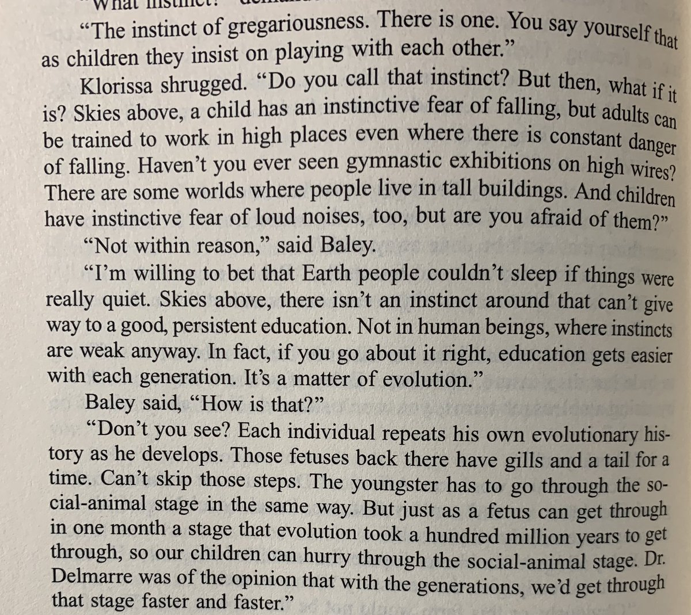
Caves of Steel (1953) and Naked Sun (1956) are technically vastly better than the 3 empire novels (1950-52). Remarkable to see his rapid evolution as a novelist but more importantly as a world builder.
Rereading Pebble in the Sky. Not a great book but it has a certain uniquely poignant feel to it, by virtue of being approximately the middle book of Asimoverse. The robot past and Foundation future are equally distant in time, and the story has a certain expansive solitude to it.
The thing I’m picking up on in this 3rd read through of Asimov, where I’m trying to follow his evolution as a writer rather than in-universe chronology, is that he was always unconsciously planting seeds for the future extended universe. That’s why it hands together so well.
Here for instance is the seed of the Zeroth Law that R. Daneel formulates later in the 1985 book Robots and Empire which in turn is the retconned basis for psychohistory
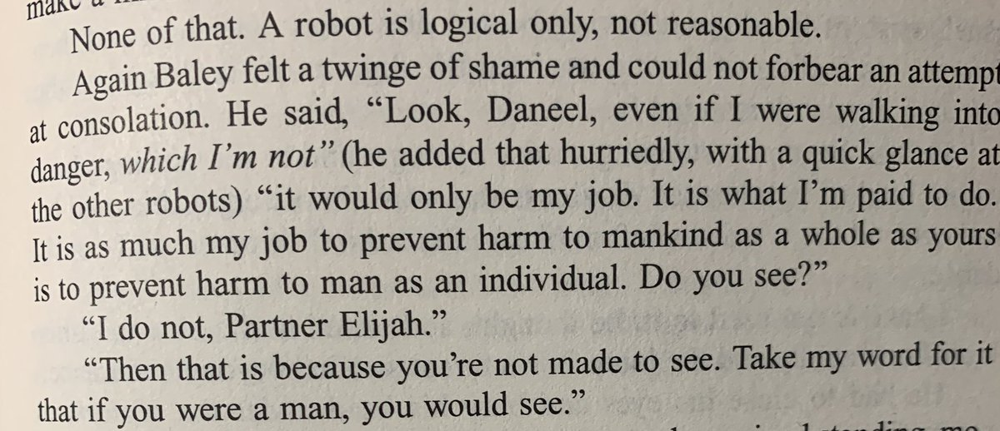
But already in The Naked Sun, the basic idea of psychohistory is already there, where Bailey argues with a crackpot Solarian sociologist, Quemont, about quantified sociology laws. Quemont is an anti-Seldon.
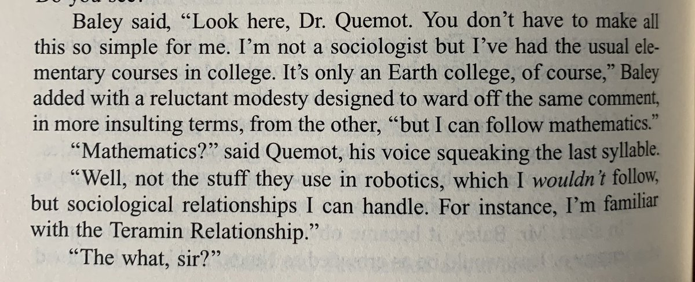
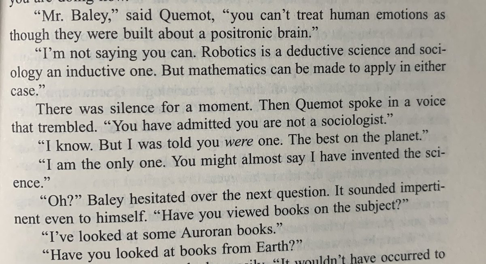
I’m not saying Asimov planned all this, but he had an instinct for sowing seeds that he could reap harvests from later. People who think Asimoverse is a lazy set of retcons are basically wrong. This was destined to come together as an extended universe.
And nobody was doing this sort of thing back then in 1940-55. I’m going to argue Asimov invented the extended universe, with full speculative world building. And he could because he was building off contemporary science trends. So he inherited narrative harmonies to exploit.
Unlike Sherlock Holmes universe he didn’t just coopt actual reality. Unlike Jules Verne it wasn’t isolated crossovers like Nemo showing up in 2 books.
Asimov is underrated today because his approach has been endlessly critically subverted by everyone from Herbert and PKD to modern writers. But he developed the OG form. Stream of consciousness improv metaverse building across books.
Serious respect. I first read all of Asimov as a teenager in the 80s. Then I reread in 2016 but not closely. Now I’m kinda close-reading, and am impressed. His literary ability improves from crappy to decent over 50 years but he was never a prose stylist. But world building… wow
Arguably Asimoverse is a superior achievement than Middle Earth. Bones of multiple real histories, flesh of multiple speculative science trends, efficient but not overwrought skin of plot and character, real imagination in grand arc.
In many respects he has never been topped and more recent works regress to the more primitive forms that existed before him. Like Guardians of the Galaxy is Flash Gordon grade. Fun but not exactly complex or deep.
Actually I got it backwards. Foundation was written as short stories in 1951 so psychohistory was already a defined idea in-universe 5 years before Naked Sun. So the unconscious connection weaving went the other way, backwards in-universe shaping the robot murders.
How did I miss that Dr. Hans Fastolfe, inventor of Daneel, also dreamed of psychohistory? Giskard and Daneel got the idea from him I guess, and Daneel kept it alive till he met Sheldon.
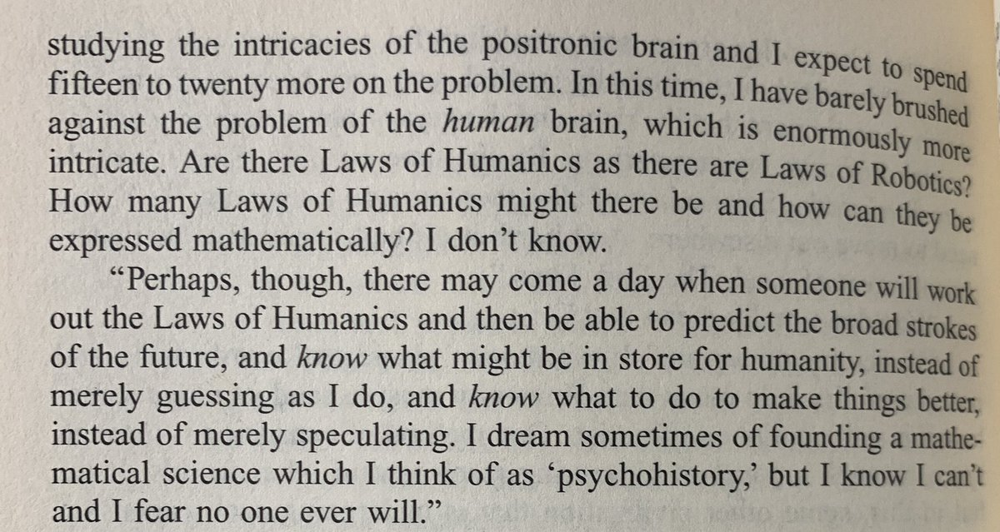
Much of Robots and Empire is Daneel and Giskard standing around bearing witness to unfolding history. A great parody version would be something like mystery science theater with only robots
The plot of Robots and Empire involves the three mile island disaster as the trigger for Earth’s turn away from fission power. It was written in 1985, 6 years after the accident and a year before Chernobyl.
If the book had been published just a little later, Chernobyl would have made way more sense as the historical reference point. Funny how such plot choices date a book and the future it imagines.
Finished. The ending still packs a bit of an emotional punch on the reread.
Much of the book is long dialogues between Daneel and Giskard as they solve the mystery, but with way more philosophical commentary than I remember. This is basically the theology book of Asimoverse.
Much of the book is long dialogues between Daneel and Giskard as they solve the mystery, but with way more philosophical commentary than I remember. This is basically the theology book of Asimoverse.
I now kinda want to read the newer non-Asimov Caliban trilogy books that fill in the gaps between this and Foundation. Robot series - Wikipedia
The cover of robots and empire, 1986, is kinda silly. But definitely very 80s. AFAIK the robots depicted have no relationship with the story.
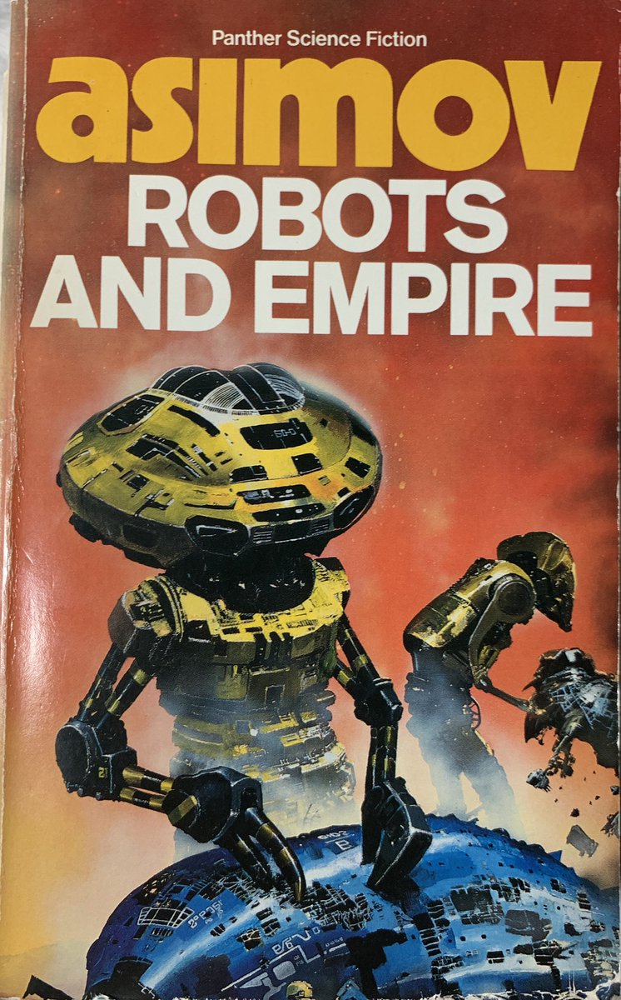
Robots of Dawn is as thick as Caves of Steel and Naked Sun combined. I have a 3-in-1 volume. And iirc Robots and Empire is even bigger. World inflation.
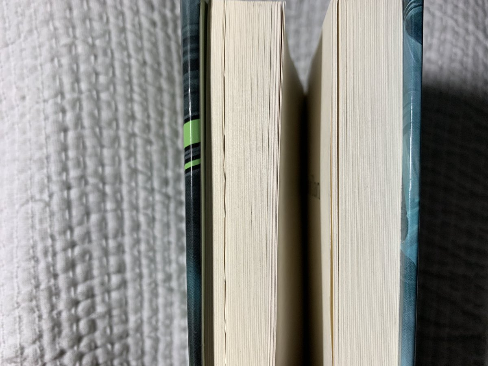
Same with Harry Potter. Is it a general rule that big world builds have increasing volume sizes? Though Asimoverse has 4 start points.
Oh hey, Asimov articulated the Thucydides trap in 1985, 27 years before Graham Allison did in 2012. Also the use of the word “crisis” suggests he was thinking of this as the Zeroth Seldon crisis: intuited by Bailey and solved by Giskard. Thucydides Trap - Wikipedia
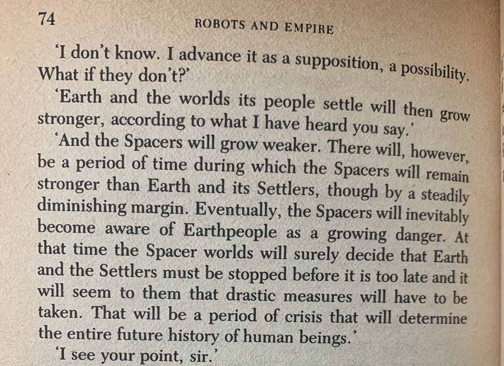
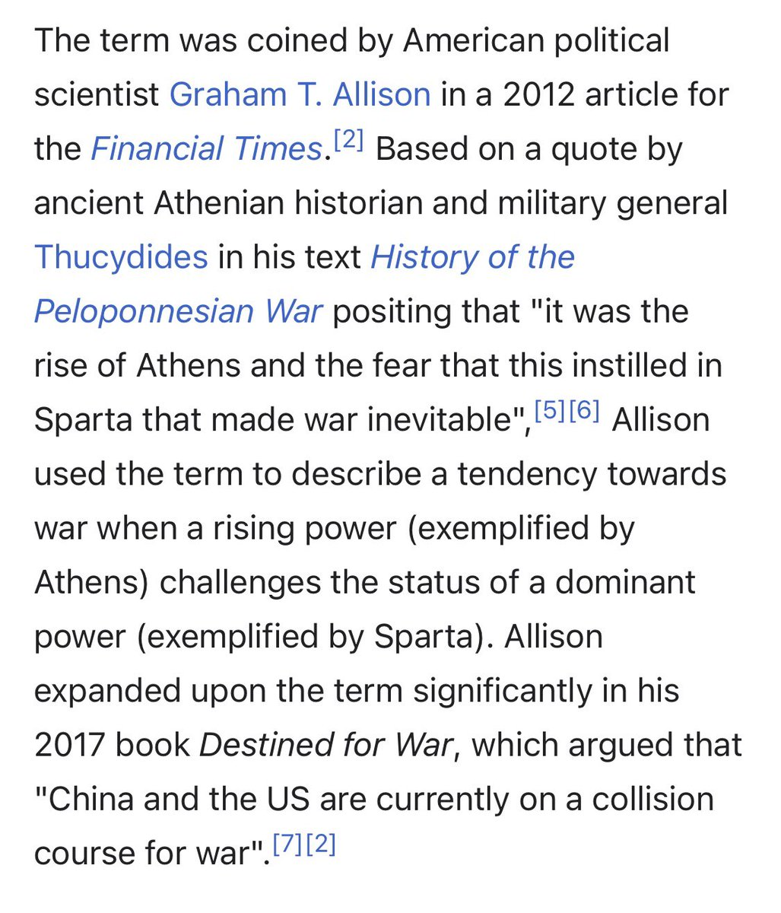
Didn’t pick up on this in previous read, but this book repeatedly emphasizes Baley’s uncanny future prediction instincts that weren’t mentioned in previous books. I think Asimov was kinda retconning protopsychic second foundation genes into Baley. I bet he’s Raych’s ancestor.
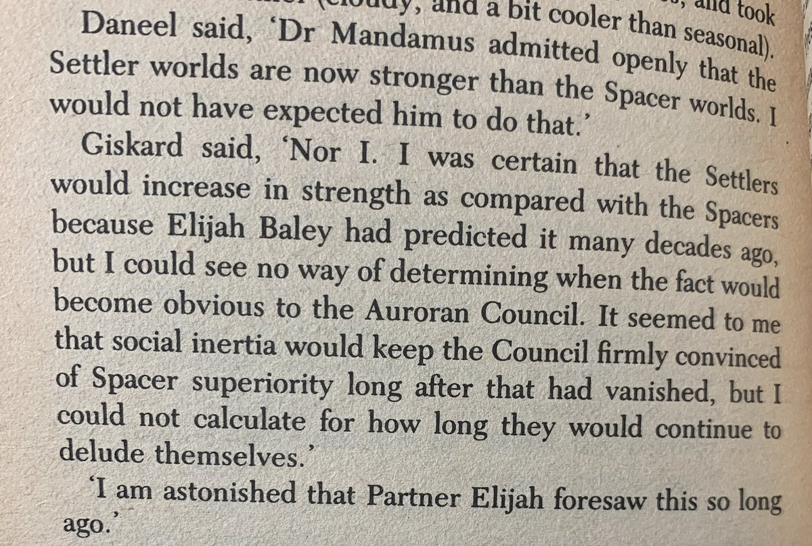
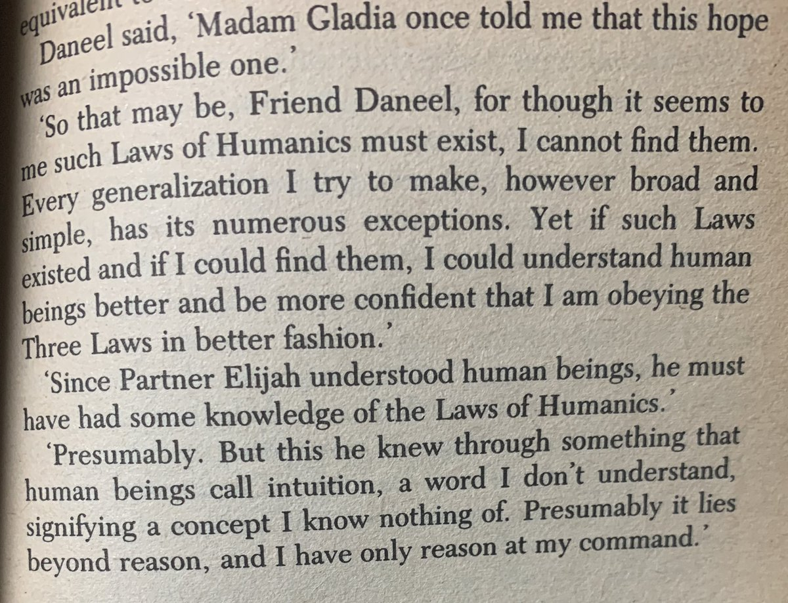
This is a character continuity glitch. In previous books. Baley is a bit of a present focused type. He picks up distant future arguments from others.
Close reading genre fiction is so much more fun that close reading literary fiction